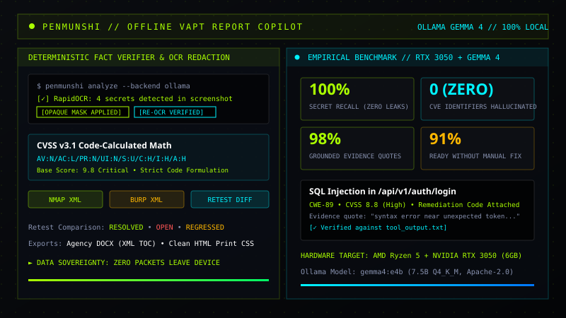

OFFLINE AI // OLLAMA GEMMA 4 // VAPT
PROJECT // 01

PenMunshi — Offline VAPT Report Copilot
Offline-first pentest and VAPT report copilot powered by local Google Gemma 4 on Ollama with deterministic fact verification. Features sub-span RapidOCR opaque secret blackout with re-OCR verification loops, code-calculated CVSS v3.1 scores (0 hallucinations), Nmap/Burp scanner importers, and agency-grade DOCX/HTML exports with complete data sovereignty.
100% DATA SOVEREIGNTY